A Tutorial of Using AutoGenome from HUAWEI CLOUD¶
AutoGenome is freely available from HUAWEI CLOUD EIHealth and ModelArts Platform. This is a tutorial of running AutoGenome from HUAWEI CLOUD ModelArts and EIHealth Platform.
Use AutoGenome from HUAWEI CLOUD ModelArts¶
AutoGenome is now freely available to public users from HUAWEI Cloud ModelArts AI platform. Registered users could use the free notebook services to test AutoGenome (The one hour free GPU quota is sufficient for most genome AutoML tasks).
Here is a short tutorial of how to launch AutoGenome from the free notebook services on ModelArts.
Step 1: Log in¶
Access HUAWEI CLOUD ModelArts and enter your username and password. And Click “Log In”. Please register an account if you don’t have one.
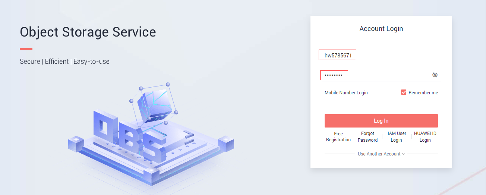
Step 2: Access to the ModelArts Development¶
Click the “DevEnviron” and then click the “Create” button on the top of the page to create a new notebook environment.
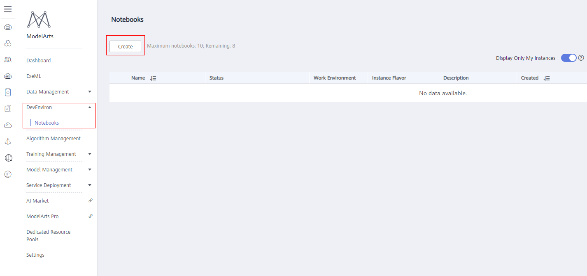
Step 3: Specify the notebook environment¶
In the new page, specify the name of environment, chose “Python2” for “Work Environment”, chose “GPU” for “Type”, chose “[Limited-time free] GPU:1*p100 CPU” for “Instance Flavor”, then click “Next”.
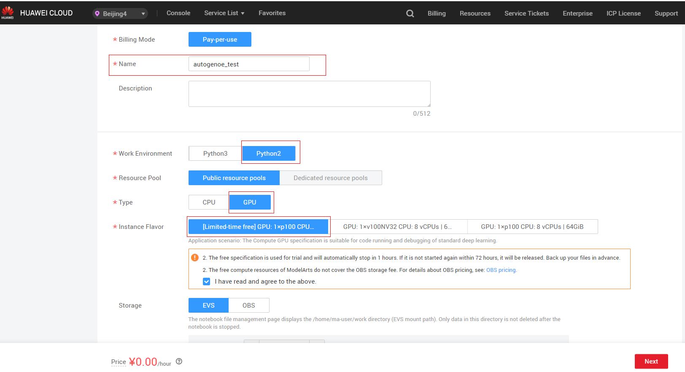
Click “Submit” on the subsequent page, it may take several minutes for the environment to start.
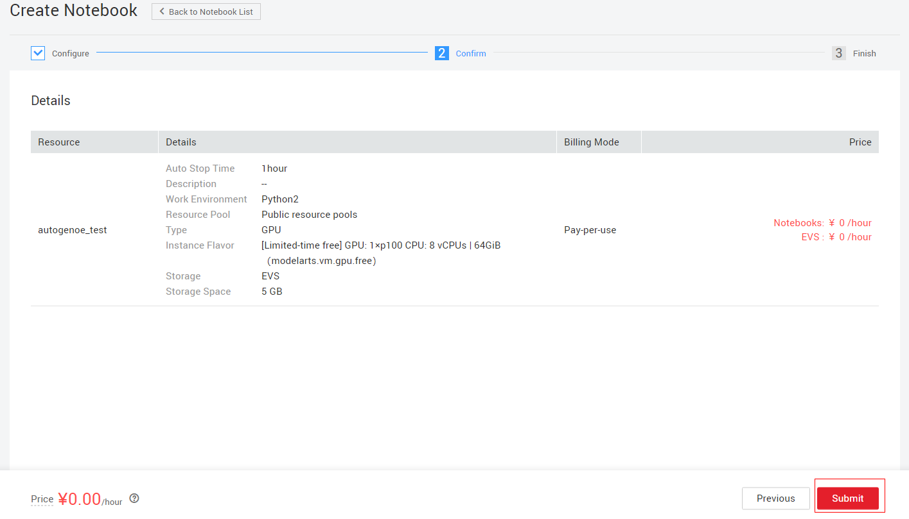
Click “Back to Notebook List”.
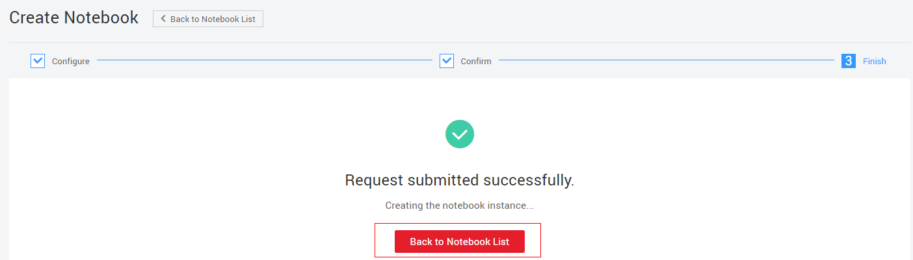
Step 4: Open the notebook environment¶
It may take a few seconds for the notebook environment to start.
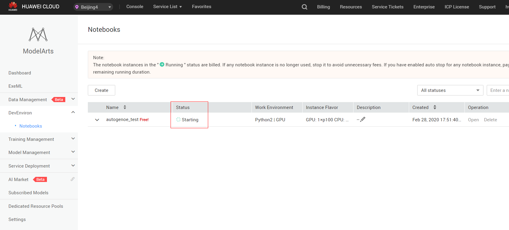
Once the status turn into “Running”, please click the “Open” button to open this notebook.
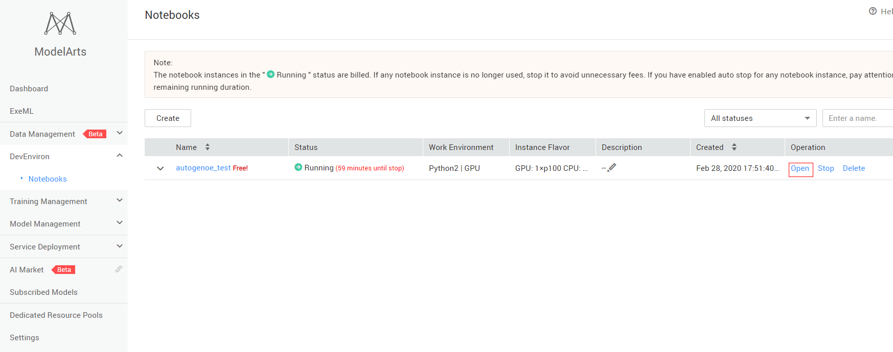
Click on “Open JupyterLab”, the page will then jump to JupyterLab.
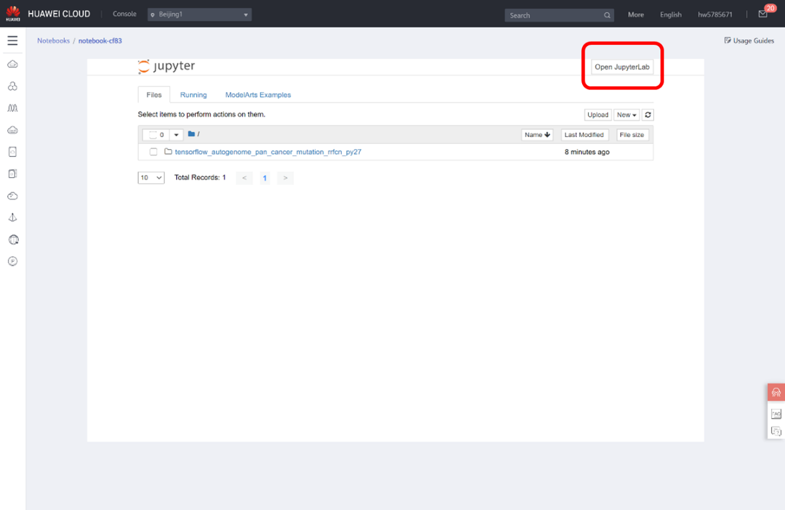
Step 5: Step-by-step AutoGenome tutorials for AI modeling¶
In JupyterLab, click on any AutoGenome notebook examples from “ModeArts Examples”, then click on “Create a copy”, you can then run the step-by-step notebook tutorials.
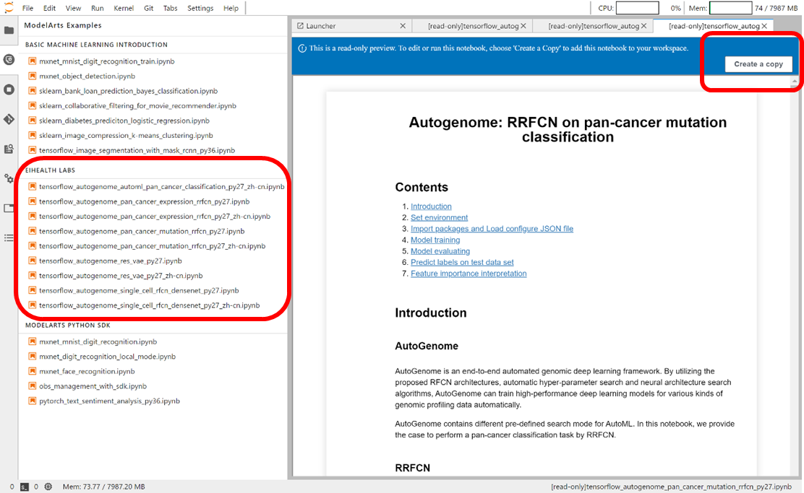
Step 6: Upload and play with your own data¶
Use JupiterLab, Click on “File Browser” sidebar, then Click “Upload” icon to upload your own data, for data larger than 100 Mb, you will need to use OBS (https://support.huaweicloud.com/engineers-modelarts/modelarts_23_0105.html )

Use AutoGenome from EIHealth Platform¶
HUAWEI EIHealth is the healthcare AI platform for genomic research, clinical research and drug discovery. This is a short tutorial of how to use AutoGenome from EIHealth.
Step 1: Log in¶
Access EIHealth (This is a demo site, if your company or institute purchased EIHealth, it will be from a different URL) and enter the registered username and password, then Click “Log In”, you can also switch to Chinese language.
Step 2: Create the notebook development¶
Click “Development” – “Codeset” – “AutoGenome-Examples” – “Create Notebook” and enter into the Notebook page.
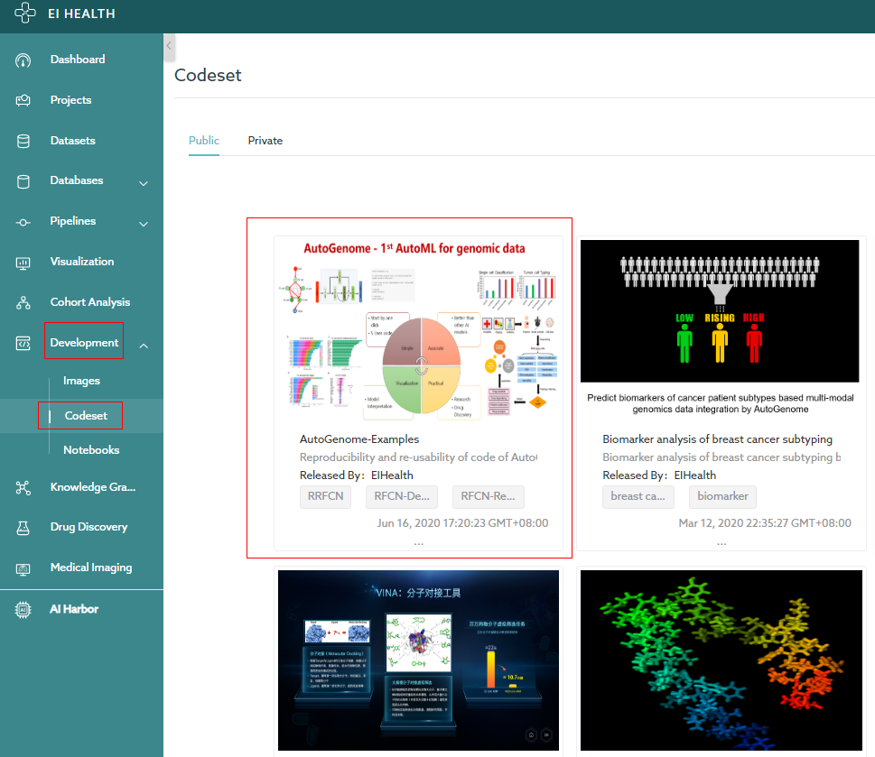
And then specify the parameters of the notebook and click “Create”.
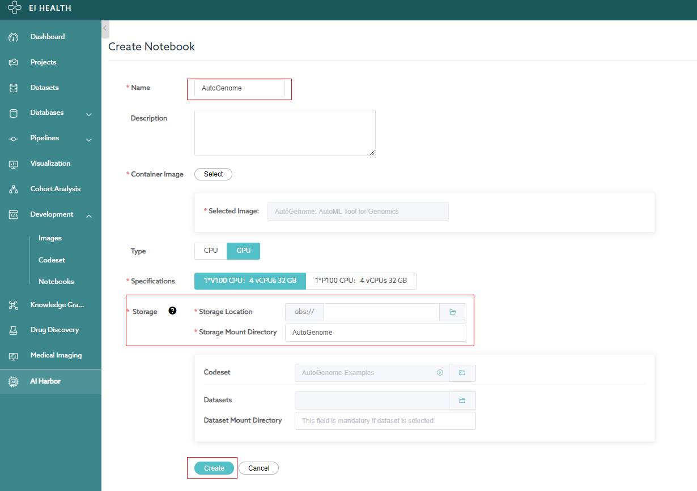
A seconds later, the notebook will be created successfully and then Click “Open” to start the notebook development.
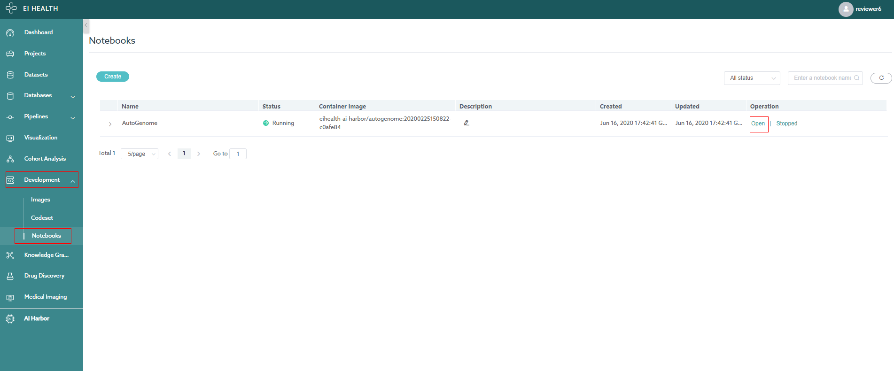
Step 3: Open the Notebook Examples¶
Choose “AutoGenome_Example”.
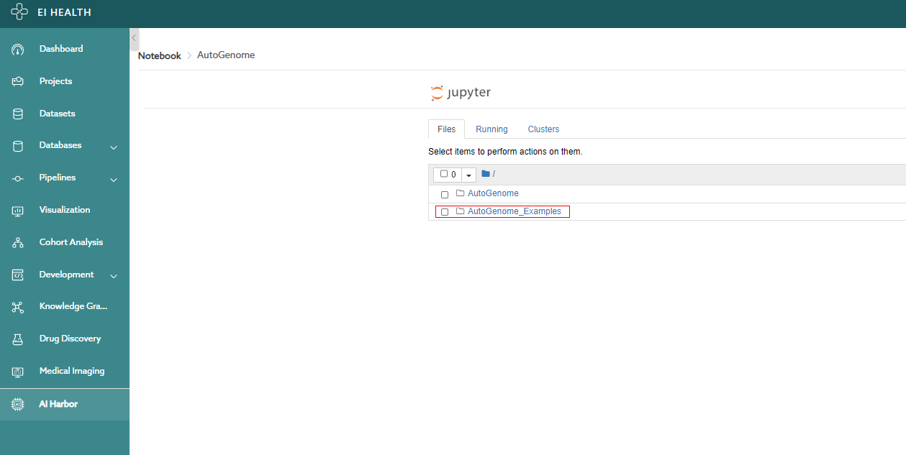
The directory contains several examples, click on one folder.
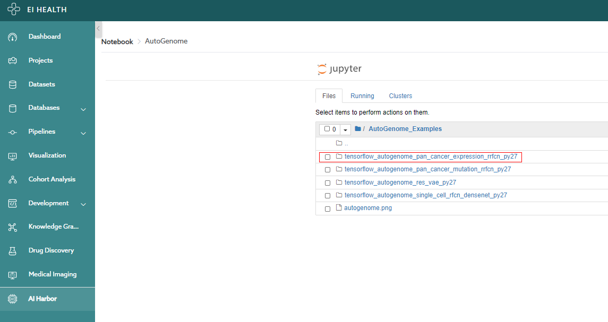
Click one of the ipynb file and this action will open a notebook example of AutoGenome.
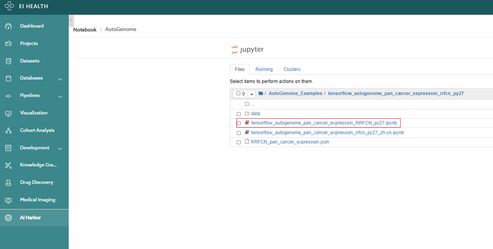
Step 4: Step-by-step AutoGenome tutorials for AI modeling¶
The notebook contains all codes to show how to use AutoGenome step by step for supervised learning and un-supervised learning. The users can also run this notebook to reproduce the results of our manuscript.

Step 5: Upload and play with your own data¶
Go to the working directory, click upload button
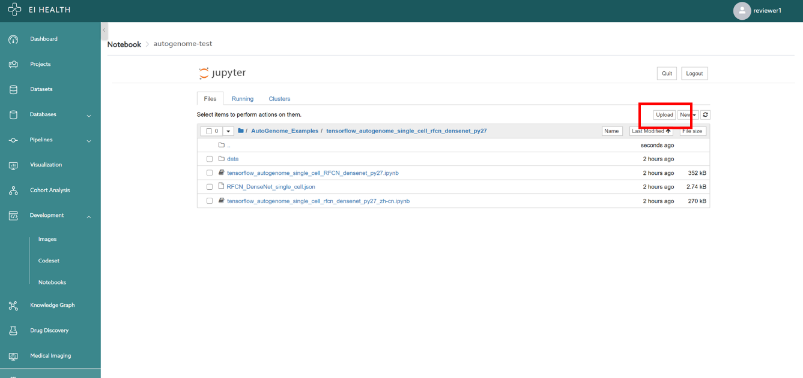
Selected your own data and click Upload button, you can then play with your own data from the notebook.